posit::conf(2023)
Quarto Presentations 

These web slides were built with Quarto and this section was copied almost entirely from Quarto’s Reveal.js demo documentation
The next few slides cover what you can do with Quarto and Reveal.js including:
- Presenting code and LaTeX equations
- Rendering code chunk computations in slide output
- Fancy transitions, animations, and code windows
Larger-than-Memory Data

Arrow and Parquet 
- Columnar memory format for flat data
- Ultra-fast read times from Parquet files
- Easily convert data.frames and tibbles to Arrow tables in-line
- Plays well with Pandas (Python) and dplyr (R)
- Arrow will soon be able to process nested list data
How fast is fast? 
- My personal laptop has 24 GB RAM
- To test Arrow’s capabilities, I read a 40 GB dataset with over 1.1 billion rows and 24 columns
- The
.parquetdataset was partitioned by Year and Month (120 files) - Important to note that my laptop would not be able to load this object entirely into memory as a data.frame or tibble given my laptop’s limited RAM
Benchmarking Read Times 


benchmark_arrow_read.R
# 0. Load Libraries to Download & Benchmark Data
library(here)
library(arrow)
library(dplyr)
library(ggplot2)
library(bench)
# 1. NYC Taxi Data download (40 GB)
data_path <- here::here("data/nyc-taxi")
open_dataset("s3://voltrondata-labs-datasets/nyc-taxi") |>
filter(year %in% 2012:2021) |>
write_dataset(data_path, partitioning = c("year", "month"))
# 2. Benchmark Read Times
bnch <- bench::mark(
min_iterations = 1000,
arrow = open_dataset(here::here("data/nyc-taxi"))
)
autoplot(bnch)Benchmarking Read Times 

- Results show read times from a 40GB parquet, 1.1 billion row dataset (benchmarked over 1,000 iterations)
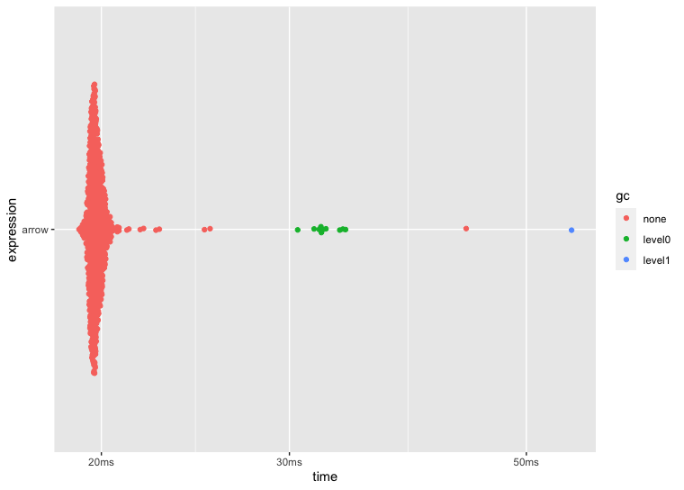
Benchmarking dplyr 


benchmark_arrow_dplyr.R
# 1. Open Arrow connection to dataset (40 GB)
nyc_taxi <- open_dataset(here::here("data/nyc-taxi"))
# 2. Benchmark dplyr pipeline
bnch <- bench::mark(
min_iterations = 10,
arrow = nyc_taxi |>
dplyr::group_by(year) |>
dplyr::summarise(all_trips = n(),
shared_trips = sum(passenger_count > 1, na.rm = T)) |>
dplyr::mutate(pct_shared = shared_trips / all_trips * 100) |>
dplyr::collect()
)
autoplot(bnch)Benchmarking dplyr 


- Arrow + dplyr summarized 1.1 billion rows in less than 5s (benchmarked over 10 iterations) to a 10 x 4 tibble
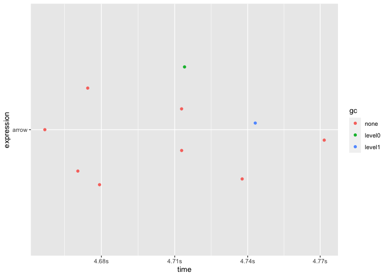
Tidyverse Compatibility 


- Many functions from the tidyverse collections of packages have 1:1 compatibility with Arrow tables
- However, sometimes you’ll encounter a breaking point
- Take this
stringr::str_replace_na()example:
- This
stringrfunction is not supported by Arrow

User Defined Functions 


- Lucky for us, Arrow allows us to create and register User Defined Functions (“UDFs”) to the Arrow engine
- Almost any function can be made compatible with Arrow by registering custom UDFs
- Let’s learn how to register
str_replace_na()with the Arrow kernel
Registering UDFs 


- First, run
arrow::schema()on your Arrow table to review the field name / data type pairs - Since I want to mutate the
vendor_namefield, I know I’ll be working with an Arrowstring()data type
Registering UDFs 


- Next, use
register_scalar_function() - Name your UDF “replace_arrow_nas” and remember to set
auto_convert = TRUE
Registering UDFs 


- Try your new registered function
What’s next for Arrow? 
ADBC: Arrow Database Connectivity
- Competitor to JDBC & ODBC allowing applications to code to this API standard but fetching results in an Arrow format
What’s next for Arrow? 
ADBC: Arrow Database Connectivity

What’s next for Arrow? 
Arrow Flight SQL
- A protocol for interacting with SQL databases using the Arrow in-memory format and the Flight RPC framework
- Its natural mode is to stream sequences of Arrow “record batches” to reduce or remove the serialization cost associated with data transport
- The design goal for Flight is to create a new protocol for data services that uses the Arrow columnar format as both the over-the-wire data representation as well as the public API presented to developers
DuckDB 

- DuckDB Labs created an in-line database management system, like a SQLite database engine, but optimized for distributed compute and optimized for larger-than-memory analysis
- The
duckdbpackage for Python and offers a state-of-the-art optimizer that pushes down filters and projections directly into Arrow scans - As a result, only relevant columns and partitions will be read thus significantly accelerates query execution
DuckDB setup 
DuckDB Basics 
library(duckdb)
library(arrow)
library(dplyr)
ds <- arrow::open_dataset("nyc-taxi", partitioning = c("year", "month"))
ds |>
filter(year > 2014 & passenger_count > 0 &
trip_distance > 0.25 & fare_amount > 0) |>
# Pass off to DuckDB
to_duckdb() |>
group_by(passenger_count) |>
mutate(tip_pct = tip_amount / fare_amount) |>
summarise(fare_amount = mean(fare_amount, na.rm = TRUE),
tip_amount = mean(tip_amount, na.rm = TRUE),
tip_pct = mean(tip_pct, na.rm = TRUE)) |>
arrange(passenger_count) |>
collect()import duckdb
import pyarrow as pa
import pyarrow.dataset as ds
# Open dataset using year,month folder partition
nyc = ds.dataset('nyc-taxi/', partitioning=["year", "month"])
# We transform the nyc dataset into a DuckDB relation
nyc = duckdb.arrow(nyc)
# Run same query again
nyc.filter("year > 2014 & passenger_count > 0 & trip_distance > 0.25 & fare_amount > 0")
.aggregate("SELECT AVG(fare_amount), AVG(tip_amount), AVG(tip_amount / fare_amount) as tip_pct","passenger_count").arrow()DuckDB Streaming 
# Reads dataset partitioning it in year/month folder
nyc_dataset = open_dataset("nyc-taxi/", partitioning = c("year", "month"))
# Gets Database Connection
con <- dbConnect(duckdb::duckdb())
# We can use the same function as before to register our arrow dataset
duckdb::duckdb_register_arrow(con, "nyc", nyc_dataset)
res <- dbSendQuery(con, "SELECT * FROM nyc", arrow = TRUE)
# DuckDB's queries can now produce a Record Batch Reader
record_batch_reader <- duckdb::duckdb_fetch_record_batch(res)
# Which means we can stream the whole query per batch.
# This retrieves the first batch
cur_batch <- record_batch_reader$read_next_batch()# Reads dataset partitioning it in year/month folder
nyc_dataset = ds.dataset('nyc-taxi/', partitioning=["year", "month"])
# Gets Database Connection
con = duckdb.connect()
query = con.execute("SELECT * FROM nyc_dataset")
# DuckDB's queries can now produce a Record Batch Reader
record_batch_reader = query.fetch_record_batch()
# Which means we can stream the whole query per batch.
# This retrieves the first batch
chunk = record_batch_reader.read_next_batch()DuckDB Streaming Speed 
# DuckDB via Python
# Open dataset using year,month folder partition
nyc = ds.dataset('nyc-taxi/', partitioning=["year", "month"])
# Get database connection
con = duckdb.connect()
# Run query that selects part of the data
query = con.execute("SELECT total_amount, passenger_count,year FROM nyc where total_amount > 100 and year > 2014")
# Create Record Batch Reader from Query Result.
# "fetch_record_batch()" also accepts an extra parameter related to the desired produced chunk size.
record_batch_reader = query.fetch_record_batch()
# Retrieve all batch chunks
chunk = record_batch_reader.read_next_batch()
while len(chunk) > 0:
chunk = record_batch_reader.read_next_batch()# We must exclude one of the columns of the NYC dataset due to an unimplemented cast in Arrow
working_columns = ["vendor_id","pickup_at","dropoff_at","passenger_count","trip_distance","pickup_longitude",
"pickup_latitude","store_and_fwd_flag","dropoff_longitude","dropoff_latitude","payment_type",
"fare_amount","extra","mta_tax","tip_amount","tolls_amount","total_amount","year", "month"]
# Open dataset using year,month folder partition
nyc_dataset = ds.dataset(dir, partitioning=["year", "month"])
# Generate a scanner to skip problematic column
dataset_scanner = nyc_dataset.scanner(columns=working_columns)
# Materialize dataset to an Arrow Table
nyc_table = dataset_scanner.to_table()
# Generate Dataframe from Arow Table
nyc_df = nyc_table.to_pandas()
# Apply Filter
filtered_df = nyc_df[
(nyc_df.total_amount > 100) &
(nyc_df.year >2014)]
# Apply Projection
res = filtered_df[["total_amount", "passenger_count","year"]]
# Transform Result back to an Arrow Table
new_table = pa.Table.from_pandas(res)DuckDB Streaming Speed 
- Pandas runtime was 146.91 seconds
- DuckDB runtime was 0.05 seconds
duckplyr 
duckplyr, from DuckDB Labs, offers 1:1 compatibility withdplyrfunctions but there are some caveats:- factor columns, nested lists, and nested tibbles are not yet supported
- you have to use
.byindplyr::summarize()asdplyr::group_by()will not be supported by the developers
Benchmarking Analysis 
- Arrow and DuckDB really stood out for fast manipulation of data using
dplyrsyntax
- The code below shows the basic transformation done to the NYC Taxi dataset via
dplyr,arrow,duckdb, andduckplyr
Benchmark: 1 million rows 
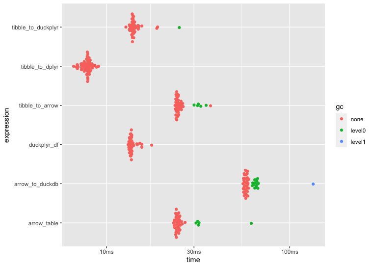
Benchmark: 10 million rows 
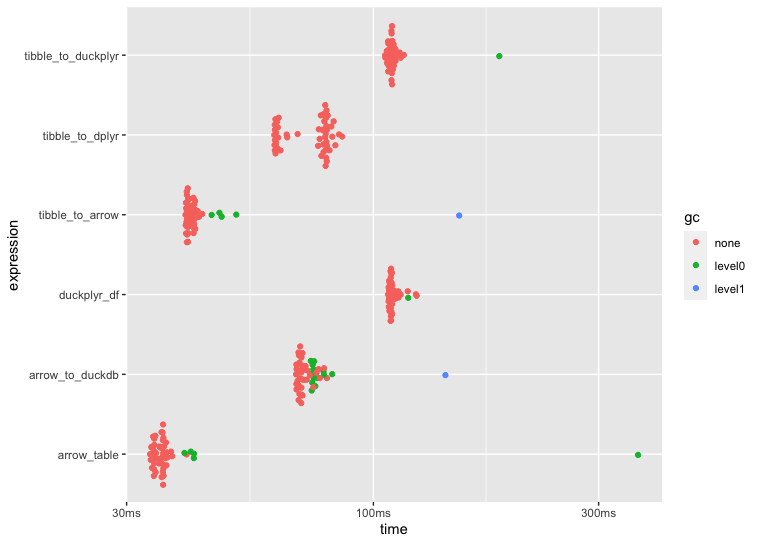
Benchmark: 100 million rows 
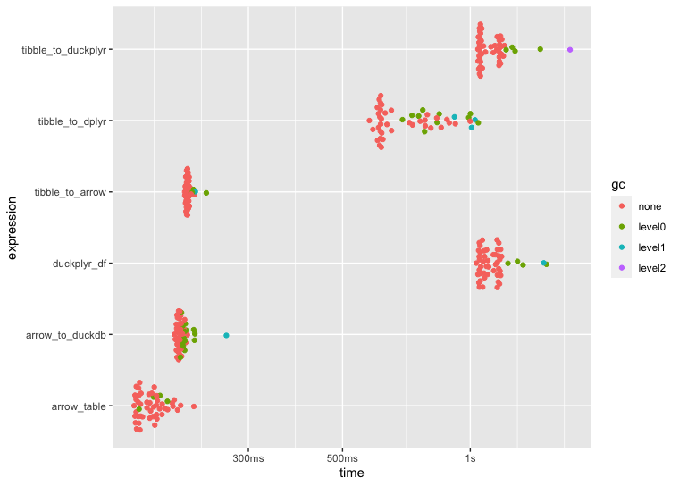
Benchmark: 500 million rows 
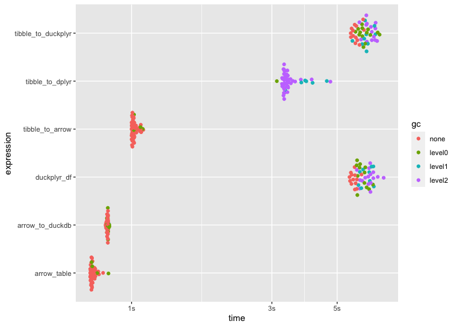
tidymodels packages 


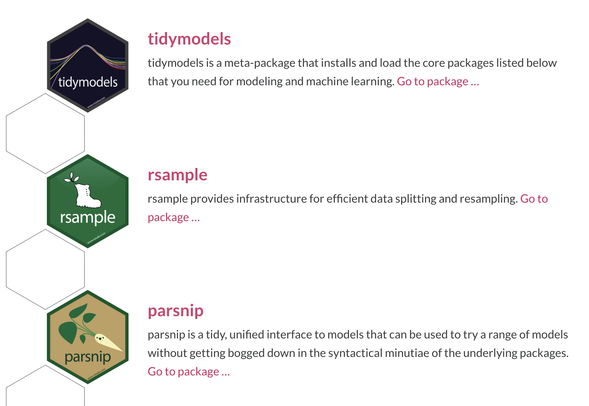
tidymodels packages 


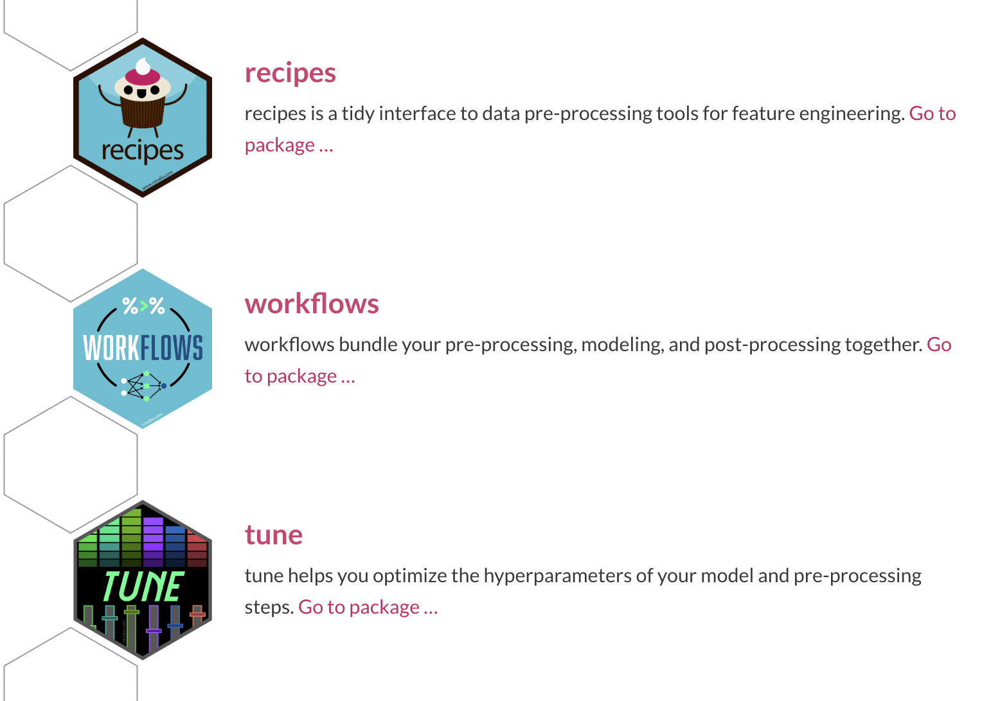
tidymodels packages 
 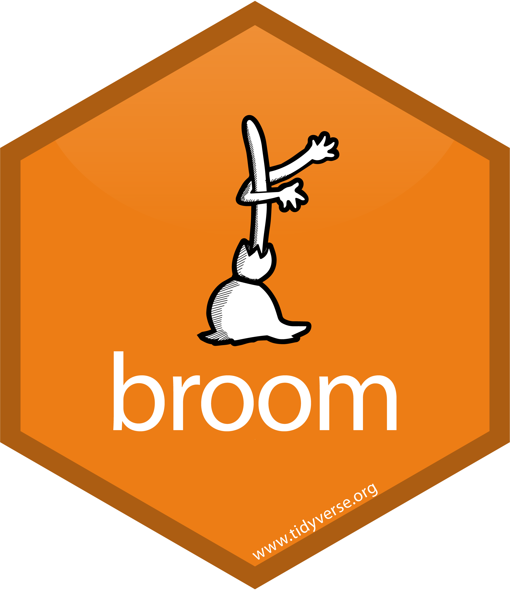
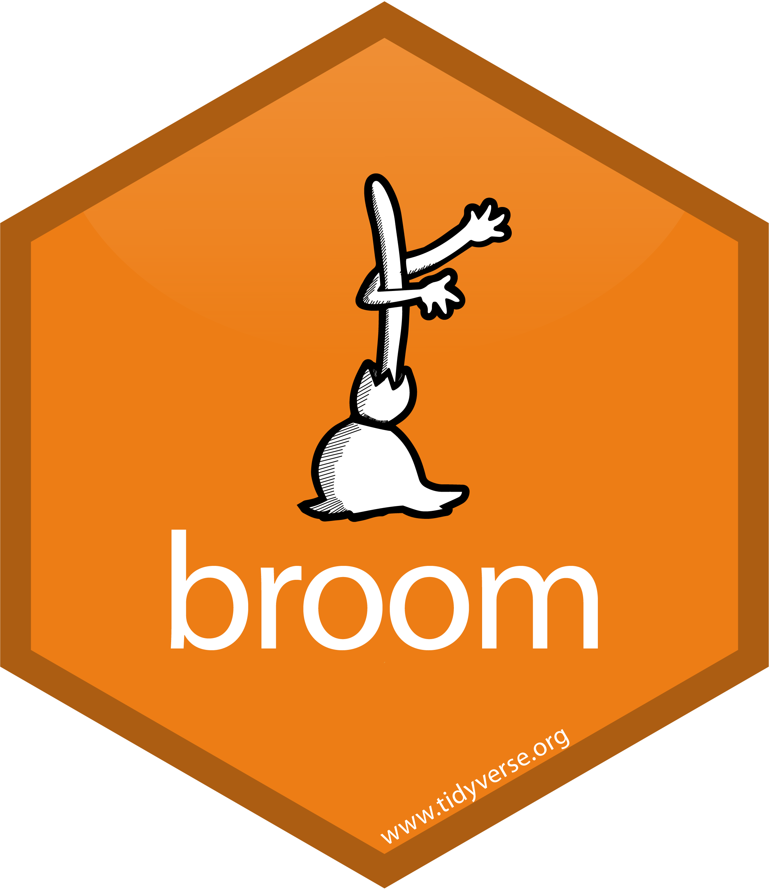

 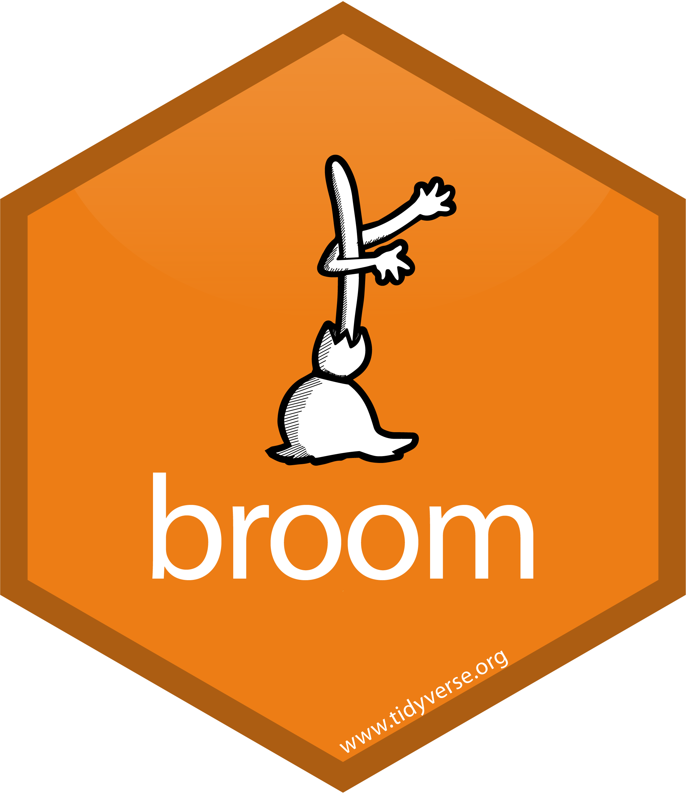
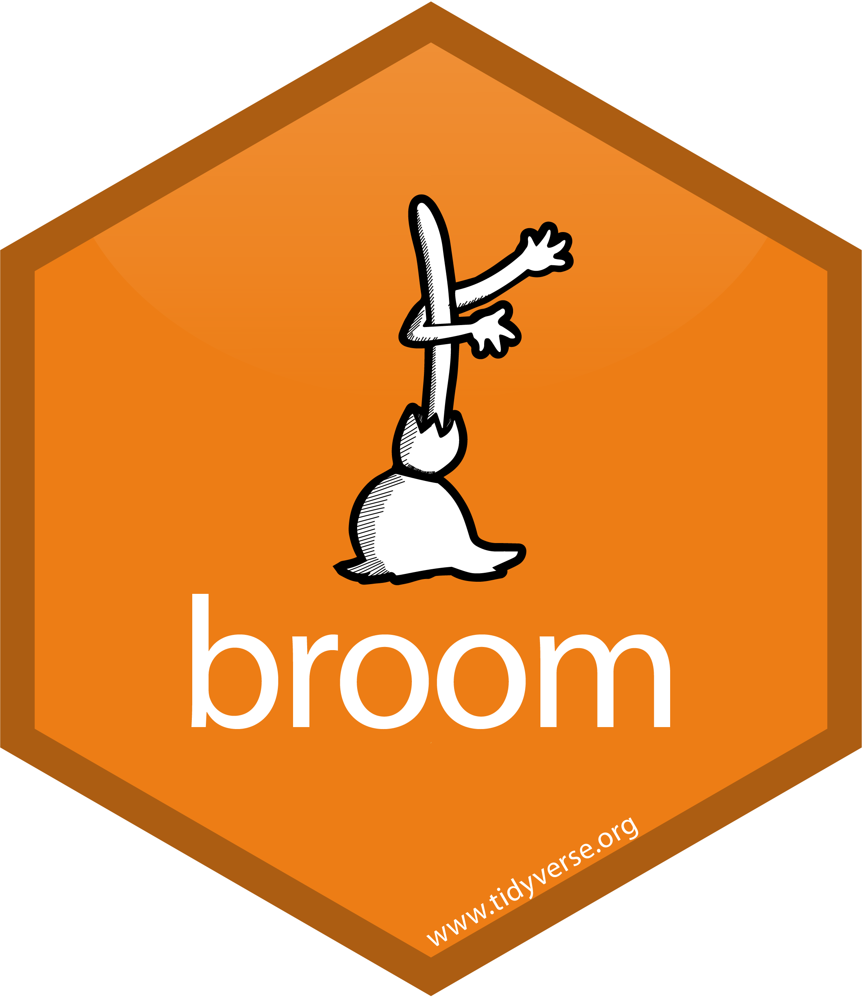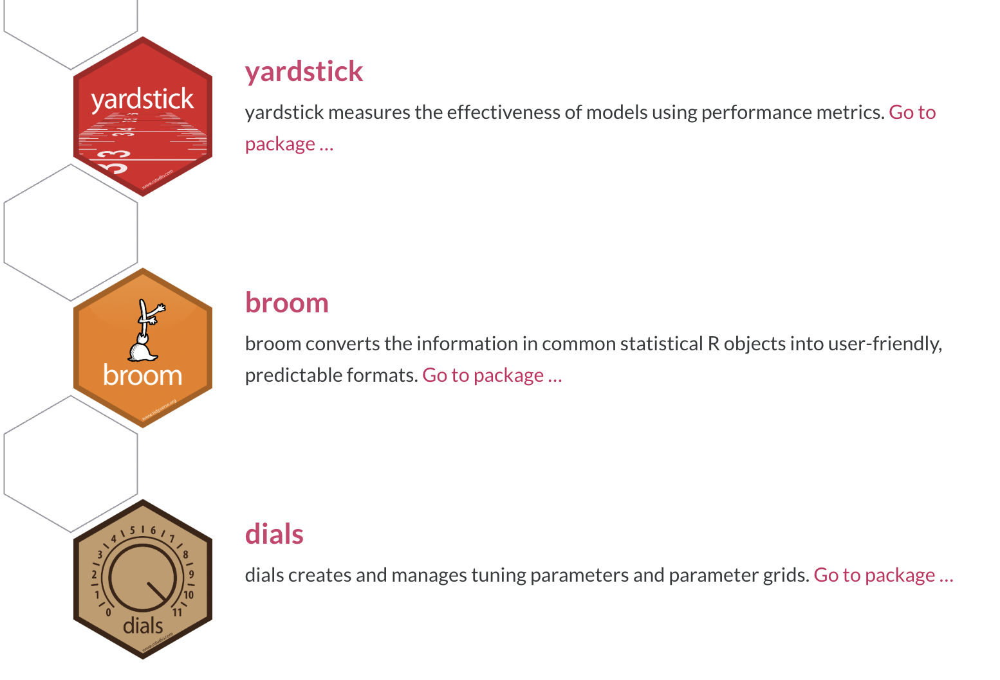
usemodels 
- The
usemodelspackage generates easy-to-use boilerplate code for modeling usemodels::use_glmnet()generates code that eases the setup of using the glmnet algorithm, and others, within thetidymodelsframework
usemodels input example
usemodels output 
glmnet_recipe <- recipe(formula = body_mass_g ~ ., data = penguins) |>
step_zv(all_predictors()) |>
step_normalize(all_numeric_predictors())
glmnet_spec <- multinom_reg(penalty = tune(), mixture = tune()) |>
set_mode("classification") |>
set_engine("glmnet")
glmnet_workflow <- workflow() |>
add_recipe(glmnet_recipe) |>
add_model(glmnet_spec)
glmnet_grid <- tidyr::crossing(penalty = 10^seq(-6, -1, length.out = 20),
mixture = c(0.05, 0.2, 0.4, 0.6, 0.8, 1))
glmnet_tune <-
tune_grid(glmnet_workflow,
resamples = stop("add your rsample object"),
grid = glmnet_grid) usemodels templates 
usemodelsisn’t new but still in early development- the following model templates can be called using one of the
usemodels::use_*()variants below:
Hyperparameter Tuning 

The main two strategies for optimization are:
Grid search 💠 which tests a pre-defined set of candidate values
Iterative search 🌀 which suggests/estimates new values of candidate parameters to evaluate
Grid Search 
- In this example, we see a large grid showing all points with our goal being to minimize MAE via learning rate:
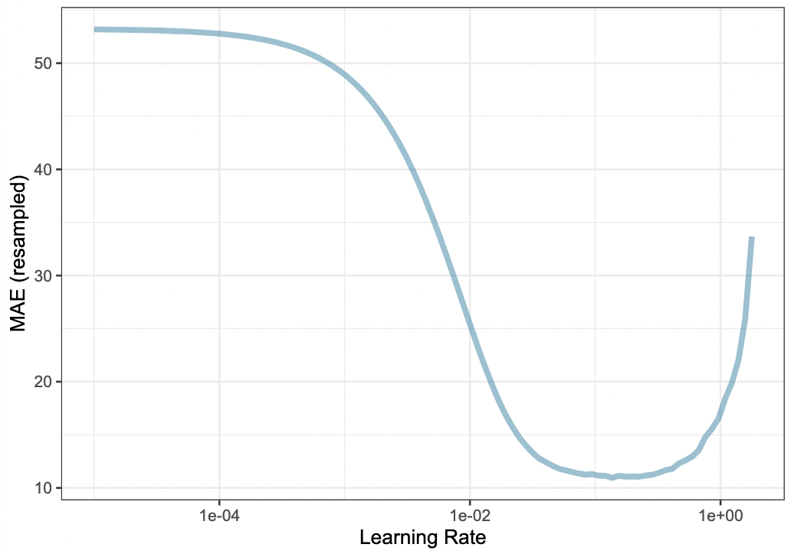
Grid Search 
- In reality we would probably sample the space more densely with, for example, a three point grid:
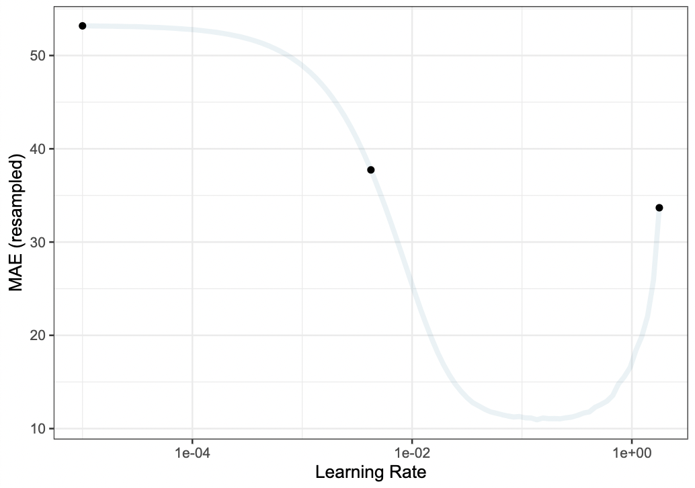
Iterative Search 
- We could start with a few points and search the space using an iterative approach via the
tunepackage:

Iteration & EI Visualized

Bayesian Optimization 
We’ll use a function called
tune_bayes()that has very similar syntax totune_grid()It has an additional
initialargument for the initial set of performance estimates and parameter combinations for the GP modelinitialcan be the results of anothertune_*()function or an integer (in which casetune_grid()is used under to hood)Max Kuhn suggests at least the # of tuning parameters plus two as the
initialgrid
Initial Grid with tune_grid() 
reg_metrics <- metric_set(mae, rsq)
set.seed(12)
init_res <-
lgbm_wflow %>%
tune_grid(
resamples = hotel_rs,
grid = nrow(lgbm_param) + 2, # lgbm_param <- workflow() |> extract_parameter_set_dials()
param_info = lgbm_param,
metrics = reg_metrics
)
show_best(init_res, metric = "mae")
#> # A tibble: 5 × 11
#> trees min_n learn_rate `agent hash` `company hash` .metric .estimator mean n std_err .config
#> <int> <int> <dbl> <int> <int> <chr> <chr> <dbl> <int> <dbl> <chr>
#> 1 390 10 0.0139 13 62 mae standard 11.3 10 0.202 Preprocessor1_Model1
#> 2 718 31 0.00112 72 25 mae standard 29.0 10 0.335 Preprocessor4_Model1
#> 3 1236 22 0.0000261 11 17 mae standard 51.8 10 0.416 Preprocessor7_Model1
#> 4 1044 25 0.00000832 34 12 mae standard 52.8 10 0.424 Preprocessor5_Model1
#> 5 1599 7 0.0000000402 254 179 mae standard 53.2 10 0.427 Preprocessor6_Model1BO with tune_bayes() 
set.seed(15)
lgbm_bayes_res <-
lgbm_wflow %>%
tune_bayes(
resamples = hotel_rs,
initial = init_res, # <- initial results
iter = 20,
param_info = lgbm_param, # lgbm_param <- workflow() |> extract_parameter_set_dials()
metrics = reg_metrics
)
show_best(lgbm_bayes_res, metric = "mae")
#> # A tibble: 5 × 12
#> trees min_n learn_rate `agent hash` `company hash` .metric .estimator mean n std_err .config .iter
#> <int> <int> <dbl> <int> <int> <chr> <chr> <dbl> <int> <dbl> <chr> <int>
#> 1 1769 2 0.0299 114 245 mae standard 9.41 10 0.160 Iter13 13
#> 2 1969 3 0.0270 240 99 mae standard 9.49 10 0.189 Iter11 11
#> 3 1780 5 0.0403 27 78 mae standard 9.54 10 0.164 Iter17 17
#> 4 1454 3 0.0414 114 10 mae standard 9.55 10 0.144 Iter10 10
#> 5 1253 2 0.0312 131 207 mae standard 9.56 10 0.145 Iter19 19Plotting BO Results 

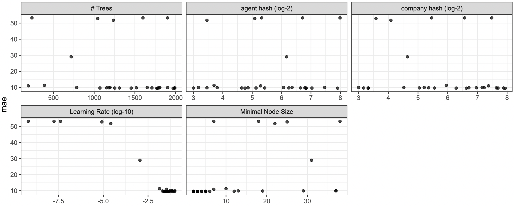
Plotting BO Results 

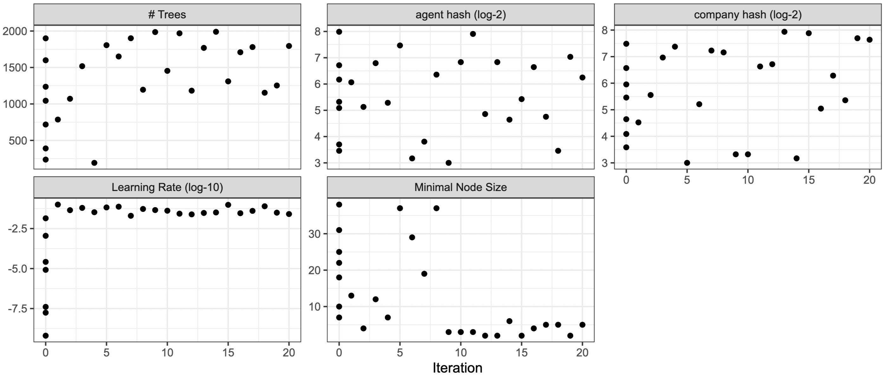